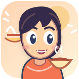

Due culture.
Una classe.
Tre sfide.
Un'esperienza collettiva tra studenti italiani e spagnoli. Tutti partecipano contemporaneamente dal proprio cellulare, mentre le idee prendono forma sullo schermo.
01 / Da vedere
Tre luoghi imperdibili: Lecce ↔ città spagnola

02 / Da assaggiareTre specialità da scoprire: Salento ↔ Spagna
03 / La scuola
Cosa raccontiamo della nostra scuola e quali differenze scopriamo
04 / ¡Pregúntales!
Domande a sorpresa tra studenti, scelte dal docente e risposte a voce
Una parola. Un mondo da scoprire.
Tocca una delle parole qui sotto per vedere come apparirà sulla LIM.
Collega il PC alla LIM
Avvia prima la regia dal tuo cellulare, quindi digita qui il codice a sei caratteri. Il tabellone si sincronizzerà automaticamente.
La LIM è una vista pubblica senza comandi per cambiare le manche. Tutto si gestisce dalla regia sul telefono.
Regia docente
Da qui controlli quello che appare sulla LIM. Il PC serve solo per proiettare.
Da vedere 👀
Studenti italiani e spagnoli rispondono in simultanea.
Apri PUENTE, scegli «Apri la LIM» e inserisci ------.
Scansionano il QR visibile sulla LIM oppure usano il link di partecipazione.
🇮🇹 Risposte italiane
🇪🇸 Respuestas españolas
La parola agli studenti
Solo tu vedi le domande ricevute. Scegli quale mostrare sulla LIM: nessuna viene proiettata automaticamente.
In attesa di domande…
🇮🇹 Italia chiede alla Spagna
🇪🇸 España pregunta a Italia
Entra nell'incontro
Inserisci il codice mostrato sulla LIM o scansiona il QR.
Da quale gruppo vieni?
Scegli il gruppo una sola volta: le risposte appariranno nella colonna corretta.
Da vedere 👀
Scrivi 3 risposte brevi. Puoi usare la tua lingua.
Risposte inviate!
Guarda la LIM: le tue idee sono parte della mappa collettiva.
Puoi modificarle finché la manche è aperta.
Pronti per la prossima!
Aspetta che il docente apra la nuova manche.
Quali curiosità hai?
Scrivi fino a tre domande per gli studenti dell’altro Paese. Solo il docente le vedrà prima di sceglierle.
Grazie. Solo il docente può vederle e decidere quali mostrare. Potrai rispondere a voce quando comparirà una domanda sulla LIM.
Da vedere
Le due classi raccontano la loro città.
✨ Tocca una parola: si trasforma in fotografia, con una breve curiosità da raccontare.
Chiedilo a loro! Preguntas sin fronteras
Le curiosità nascono dagli studenti. Il docente sceglie cosa mostrare.
Aspettiamo che il docente selezioni la prima domanda.